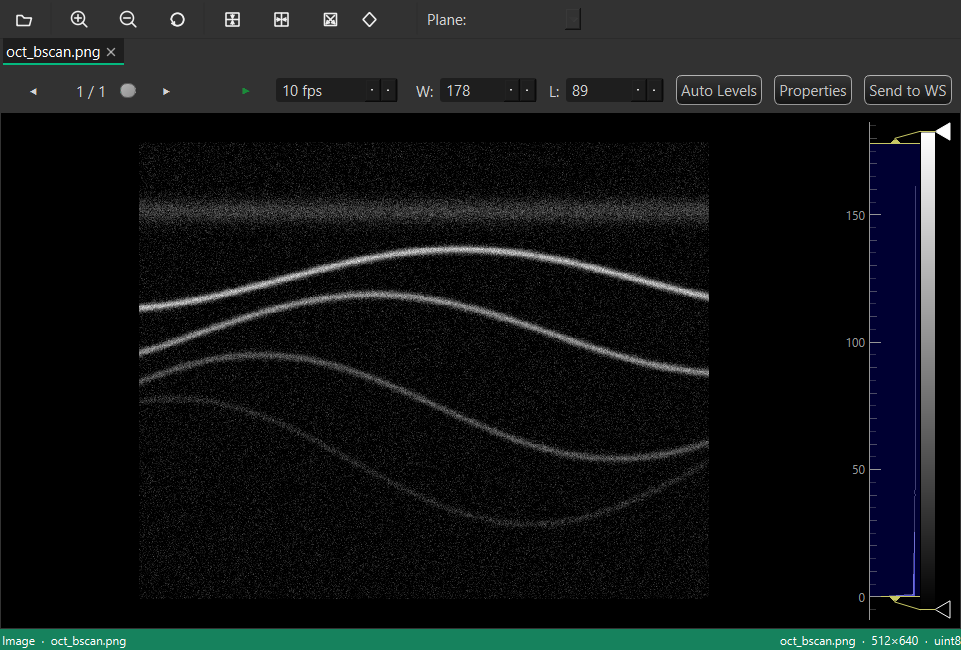
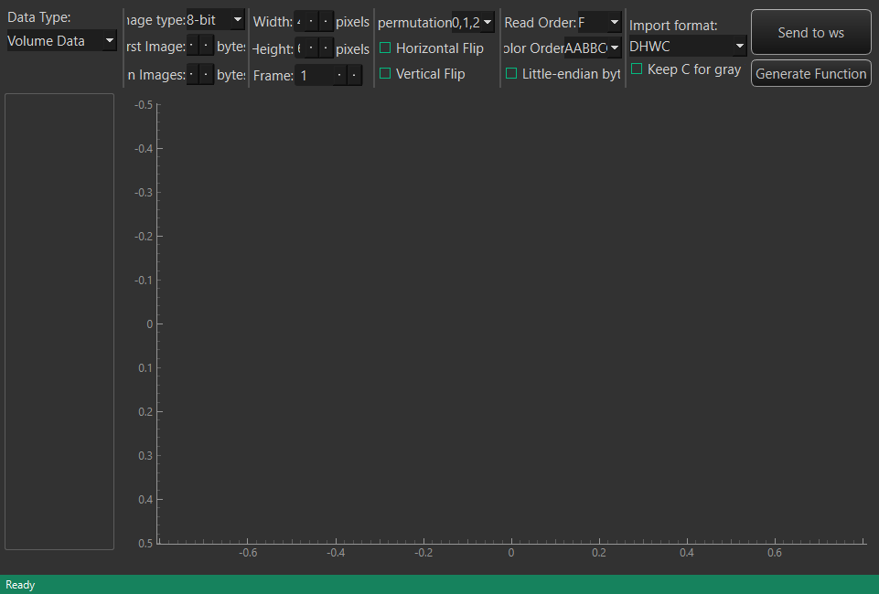
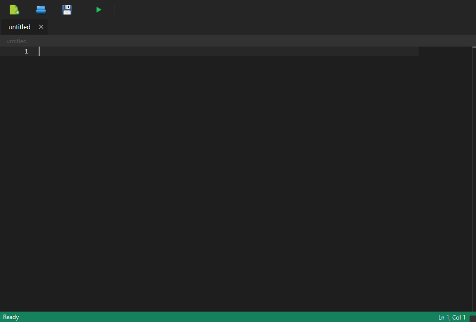
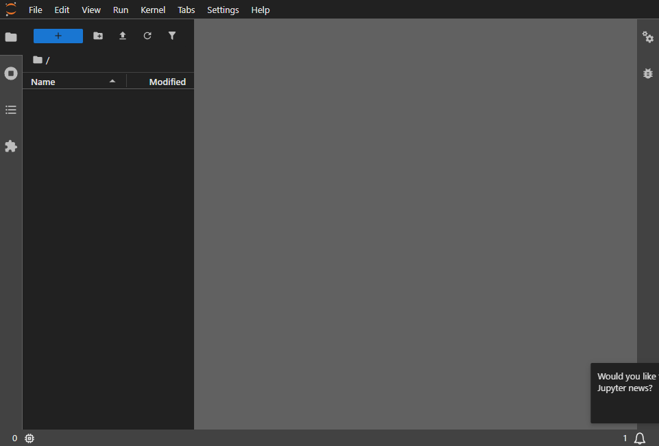

Toolboxes
Toolboxes are the built-in tools that ship with MedICS. Each opens as a tab in the central area — from the Toolboxes menu, from the activity bar, or by double-clicking a supported file in File Explorer.
FilePreview
Preview any file without changing it: 2-D images, DICOM and NIfTI volumes, TIFF stacks, tables (CSV, TSV, Excel, Parquet), Markdown, and source code. For image and volume views you can move through slices, adjust window/level, zoom and pan, and apply flips, rotations and transposes.

ImportData
Load images and volumes into the workspace. Choose Image Sequence, Single File or DICOM Folder, drag files or folders onto the window, and let the importer load them in the background with a progress bar. Video files load as frame stacks. Imported data appears in the Variables panel.

PyEditor
A Python editor in a tab, with syntax highlighting, code completion, an outline and an integrated terminal. Run (F5) executes your script against the live console, so it can use the variables already in your workspace.

JupyterLab
The full JupyterLab interface, embedded in a tab. It runs on MedICS's own Python environment, and your workspace is available inside notebooks.
